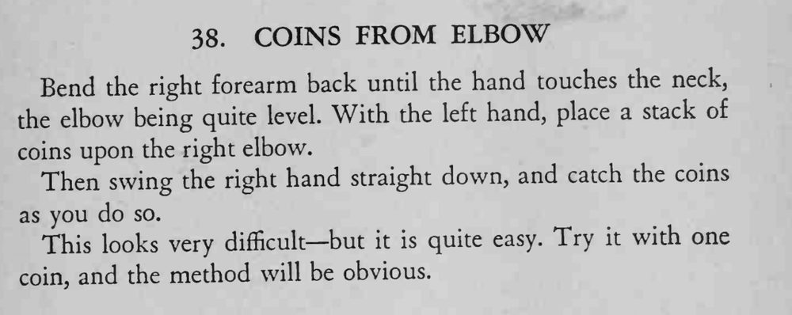

一摞硬币放在右肘上，右手向下一挥，硬币全部被接在手中，看上去非常难。
先用一枚硬币试，找到挥臂与接币的节奏后，整摞就很容易。

Bend the right forearm back until the hand touches the neck, the elbow being quite level. With the left hand, place a stack of coins upon the right elbow. Then swing the right hand straight down, and catch the coins as you do so. This looks very difficult— but it is quite easy. Try it with one coin, and the method will be obvious.